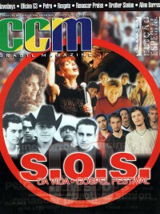

CMnexus
:
Contemporary Christian culture, music, and media.
Magazines
Profiles
Dove Awards
cmnexus.org
CM
nexus
→
Magazine list
→
CCM Brasil
→
Issues
CCM Brasil
, 1999, #99
< -- Prev
Issue list
Next -- >
Cover

S.O.S. Gospel Festival
Cover Feature:
"Viva O SOS 99"
SOS 1999 Festival
Article:
Aline Barros
Apocalipse 16
Benner Jacks
Brother Simion
Código C
DJ Alpiste
Ismael Ramos
Marquinhos Gomes
Maurílio Santos
Oficina G3
The Newsboys
; article, interview, song lyrics
Paulinho Makuko
Praise Machine
Renascer do Samba
Renascer Praise
Resgate
Rhimena Abecia
Troad
Kleber Lucas
Vania e Bani
Ana Raia
Petra
Novo Som
RM6
Relevant Links
You may be able to find
CCM Brasil
in a library near you:
check
Worldcat
< -- Prev
Issue list
Next -- >
CMnexus
(noun)
The magazine index
of modern music
and Christianity
© 2011 CMnexus. Last updated April 2021.
Contact:
Rants and other correspondence to:
editor -AT- cmnexus
-DØT- org
About